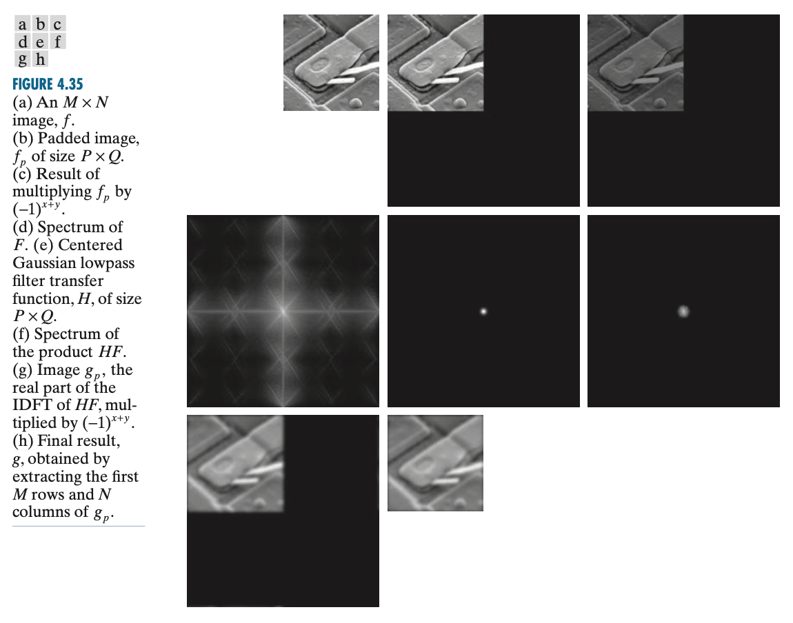

Fourier Transform 3 (2D DFT, Image)
二维傅里叶变换
二维连续傅里叶变换
设 \(f(x,y)\) 是一个二元函数，其中 \(x,y\) 为连续变量。类似于一维的傅里叶变换和逆变换，二维的傅里叶变换为： \[ F(u,v)=\int_{-\infty}^{\infty}\int_{-\infty}^{\infty}f(x,y)e^{-j(ux+vy)}\mathrm dx\mathrm dy\tag{1-1}\label{2D-FT} \] 逆变换为： \[ f(x,y)=\frac{1}{2\pi}\int_{-\infty}^{\infty}\int_{-\infty}^{\infty}F(u,v)e^{j(ux+vy)}\mathrm dx\mathrm dy\tag{1-2}\label{2D-IFT} \]
二维离散傅里叶变换
设 \(f(x,y)\) 是一个二元函数，其中 \(x\in\{0,\ldots,M-1\},\,y\in\{0,\ldots,N-1\}\). 类似于一维的离散傅里叶变换和逆变换，二维离散傅里叶变换为： \[ F(u,v)=\sum_{x=0}^{M-1}\sum_{y=0}^{N-1}f(x,y)e^{-j2\pi(ux/M+vy/N)},\quad u=0,\ldots,M-1,\;v=0,\ldots,N-1\tag{1-3}\label{2D-DFT} \] 逆变换为： \[ f(x,y)=\frac{1}{MN}\sum_{u=0}^{M-1}\sum_{v=0}^{N-1}F(u,v)e^{j2\pi(ux/M+vy/N)},\quad x=0,\ldots,M-1,\;y=0,\ldots,N-1\tag{1-4}\label{2D-IDFT} \]
二维离散傅里叶变换的性质
可类比一维离散傅里叶变换的性质。
平移性质
设 \(\mathscr F\{f(x,y)\}=F(u,v)\)，则： \[ \begin{align} &\mathscr F\{f(x-x_0,y-y_0)\}=e^{-j2\pi(ux_0/M+vy_0/N)}F(u,v)\\ &\mathscr F^{-1}\{F(u-u_0,v-v_0)\}=e^{j2\pi (u_0x/M+v_0y/N)}f(x,y) \end{align} \]
旋转性质
使用极坐标：\(x=r\cos\theta,\,y=r\sin\theta,\,u=\omega\cos\varphi,\,v=\omega\sin\varphi\)，可得如下变换对： \[ f(r,\theta+\theta_0)\iff F(\omega,\varphi+\theta_0) \] 即若 \(f(x,y)\) 旋转 \(\theta_0\) 角度，则 \(F(u,v)\) 也旋转相同的角度，反之亦然。
周期性
\[ \begin{align} &F(u,v)=F(u+k_1M,v+k_2N)&&k_1,k_2\in\mathbb Z\\ &f(x,y)=f(x+k_1M,y+k_2N)&&k_1,k_2\in\mathbb Z \end{align} \]
共轭对称性
若 \(f(x,y)\) 是实函数，则 \(F(u,v)\) 是共轭对称的（实部偶函数，虚部奇函数），即： \[ F^\ast(u,v)=F(-u,-v) \] 若 \(f(x,y)\) 是虚函数，则 \(F(u,v)\) 是共轭反对称的（实部奇函数，虚部偶函数），即： \[ F^\ast(u,v)=-F(-u,-v) \]
频谱和功率谱
由于 DFT 是复函数，因此可以用极坐标表示： \[ \begin{align} &F(u,v)=R(u,v)+jI(u,v)=|F(u,v)|e^{j\phi(u,v)}\\ \text{where}\quad&|F(u,v)|=\sqrt{R^2(u,v)+I^2(u,v)}\\ &\phi(u,v)=\arctan\frac{I(u,v)}{R(u,v)} \end{align} \] 其中 \(|F(u,v)|\) 称为幅度谱，\(\phi(u,v)\) 称为相位谱，二者统称为频谱。有时也会不严谨地直接把幅度谱称为频谱。
功率谱定义为幅度谱的平方： \[ P(u,v)=|F(u,v)|^2=R^2(u,v)+I^2(u,v) \] 前文说到，对于实函数 \(f(x,y)\)，其傅里叶变换 \(F(u,v)\) 是共轭对称的，于是容易知道其频谱是关于原点偶对称的，而相位谱是关于原点奇对称的： \[ |F(u,v)|=|F(-u,-v)|\quad\quad\phi(u,v)=-\phi(-u,-v) \]
二维循环卷积定理
设 \(\mathscr F\{f(x,y)\}=F(u,v),\,\mathscr F\{g(x,y)\}=G(u,v)\)，则： \[ \begin{align} &\mathscr F\{f(x,y)\ast g(x,y)\}=F(u,v)\cdot G(u,v)\\ &\mathscr F\{f(x,y)\cdot g(x,y)\}=\frac{1}{MN}F(u,v)\ast G(u,v) \end{align} \]
其中卷积依旧是循环卷积。
图像的频域滤波
图像的空间域与频域
前文中我们研究的一元函数可以看作是时域信号，但是对于图像而言，时域信号这个说法显然不合适了。那应该怎么理解呢？
首先，一幅数字图像其实是一个二元函数 \(f=f(x,y)\)，其中自变量 \((x,y)\) 是像素的坐标，函数值是像素的灰度级。因此，将图像在三维空间中绘制出来，就好像一个连绵不断的山脉，类似于信号波形的二维版本。只不过这里自变量表示空间位置而非时间，因此我们称之为空间域。
与时域信号类似，我们可以用无数个二维的不同角频率的正余弦函数去近似一幅图像。其中，图像变化比较剧烈的地方——比如边缘、纹理等细节，需要依靠高频的正余弦函数去拟合；相反，图像大体的构图就对应低频的正余弦函数。因此，我们经常把图像的细节称作高频分量，而整体构图称作低频分量。
对图像做二维离散傅里叶变换就得到了其频域表示，将频域表示的频谱（幅度）可视化出来就是频谱图。频域滤波指在频域上使用一个滤波器对图像做滤波的过程。然而，出于可视化、浮点误差等考虑，接下来我们关注对图像做频域滤波时的一些值得注意的方面。
循环卷积与交叠误差
根据循环卷积定理，在空间域中做循环卷积等价于在频域中做乘法。然而，我们在图像处理中使用的卷积通常是 padding 0 的卷积，两种卷积方式导致的结果差别就是所谓的交叠误差。
幸运的是交叠误差很容易解决。设 \(f(x,y)\) 和 \(h(x,y)\) 分别是 \(A\times B\) 和 \(C\times D\) 的图像，则选取 \(P\geq A+C-1\) 和 \(Q\geq B+D-1\)，将 \(f\) 和 \(h\) 都往右下填充 0 直到 \(P\times Q\) 大小，那么在频域中处理（对应循环卷积）与直接 padding 0 的卷积结果就一样了。
频谱图的可视化：中心化与对数变换
我们知道 \(F(0,0)\) 表示频率最低的分量，其值其实是图像所有位置的亮度之和： \[ F(0,0)=\sum_{x=0}^{M-1}\sum_{y=0}^{N-1}f(x,y)e^{-j2\pi(0x/M+0y/N)}=\sum_{x=0}^{M-1}\sum_{y=0}^{N-1}f(x,y) \] 那么在频谱图上，这个点的亮度是最大的。又由于周期性，所以事实上四个角的亮度都很大，这不利于我们观察频谱图。因此，我们常常对频谱图做中心化，即将 \(F(0,0)\) 平移到 \(F(M/2,N/2)\) 的位置。根据傅里叶变换的平移性质，这相当于在做傅里叶变换之前先对 \(f(x,y)\) 乘以 \((-1)^{x+y}\).
另外，由于 \(F(0,0)\) 实在是太大了，当我们可视化出频谱图后其他地方的亮度很低，不利于观察，因此我们常常在可视化之前做如下对数变换： \[ F'(u,v)=\log(1+|F(u,v)|) \]
浮点误差
理论上，傅里叶变换和逆变换是一对可逆操作，但是由于计算机存在浮点误差，实际操作中数值也许会稍有扰动。例如，数字图像原本是实数函数，在傅里叶变换到频域后执行某些滤波操作，然后傅里叶逆变换后理应得到实函数，但实际中可能存在很小的虚部。因此，我们常常需要在逆变换后增加一个取实部的操作。
频域滤波步骤
根据上文的讨论，在对图像进行频域滤波时有如下步骤：
- 对于 \(M\times N\) 的图像 \(f(x,y)\)，取 \(P=2M,Q=2N\)；
- 将原图零填充到 \(P\times Q\) 大小，得到 \(f_p(x,y)\)；
- 对 \(f_p(x,y)\) 乘以 \((-1)^{x+y}\)，为频谱图的中心化做准备；
- 计算傅里叶变换 \(F(u,v)\)；
- 构造大小为 \(P\times Q\) 的频域滤波器 \(H(u,v)\)；
- 进行频域滤波：\(G(u,v)=H(u,v)F(u,v)\)；
- 计算傅里叶逆变换，取实部并将 \((-1)^{x+y}\) 乘回来： \[ g_p(x,y)=\left(\text{real}\left[\mathscr F^{-1}\{G(u,v)\}\right]\right)(-1)^{x+y} \]
- 取 \(g_p(x,y)\) 左上角 \(M\times N\) 区域 \(g(x,y)\)，得到最终结果。

参考资料
- Rafael C. Gonzalez. Digital Image Processing, Fourth Edition. ↩︎